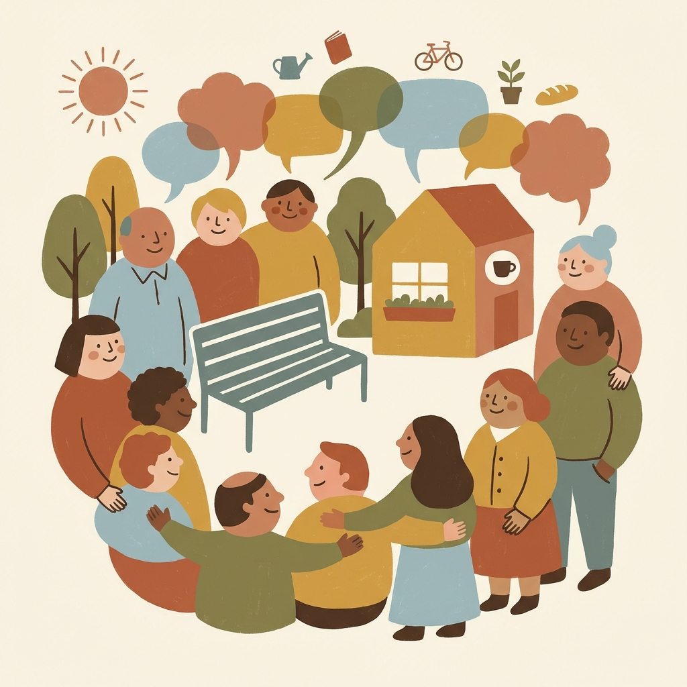

Community Change Maker
10 Ways to Change the World (That Don't Involve Blowing Up the Death Star)

Project Overview
The Community Change Maker is an AI-powered brainstorming tool designed to help you find small, actionable ways to improve your local community. Instead of suggesting grand, impossible gestures, this tool uses 10 distinct "personas" to suggest humble but effective interventions.
Whether it's becoming a "Public Character" who lends umbrellas to strangers, or an "Onion Merchant" who finds a simple niche to serve, this tool helps you find the right micro-strategy for your specific context.
Launch the Change Architect GemThe Origin Story
This project is directly inspired by the insightful blog post "10 Underrated Ways to Change the World" by Adam Mastroianni (author of the Experimental History newsletter).
Mastroianni argues that we often suffer from "Superhero Syndrome"—waiting for the chance to blow up the Death Star while ignoring the small, daily actions that actually keep society running. He outlines 10 alternative archetypes for doing good, including:
- The Public Character: Someone who is just present and helpful in public spaces.
- The Social Nucleation Site: Creating "unreasonable attentiveness" to help groups bond.
- The Hobbit: Using "hobbitian courage" to make small, non-fatal risks to improve systems.
- The Good Audience: Supporting creators by simply showing up and paying attention.
"We do occasionally need someone to shoot torpedos into the exhaust port of a giant doomsday machine. But most of the time, we need people who sell onions, people who make sure the kids get to school safely, people who will show up to the comedy gig and laugh." — Adam Mastroianni
You can read the original full post here.
How to Use It
- Launch the Gem: Click the button above to open the Gemini Gem interface (requires a Gemini Advanced subscription).
- Describe Your Context: In the text box, describe your current situation (e.g., "I am a college student living in a dorm," or "I am a retired teacher in a small town").
- Get 10 Ideas: The Gem will simulate 10 different agents, each embodying one of Mastroianni's archetypes, and provide a tailored list for you.
- Review and Act: Pick the most compelling micro-strategy and start today!
AI Transparency & Reporting Checklist (GUIDE-LLM)
Standardized disclosure per GUIDE-LLM (Feuerriegel et al., 2026, Nature Human Behaviour, DOI: 10.1038/s41562-026-02492-7).
View Complete GUIDE-LLM Reporting Table (Items A.1–G.1)
| Checklist Item | Project Disclosure |
|---|---|
| A.1 Scope of LLM use | Civic brainstorming assistant simulating 10 micro-civic archetypes inspired by Adam Mastroianni’s “10 Underrated Ways to Change the World” (Experimental History). |
| A.2 Degree of automation | Human-in-the-loop ideation: users describe their local context and select which community micro-intervention to pursue offline. |
| B.1–B.5 Model & system details | Google Gemini Gem prototype operating in interactive chat mode. |
| C.1–C.2 Prompts & instructions | 10-archetype persona prompt specification authored by Dr. Jose Marichal from Mastroianni’s public essay. |
| D.1 Personal/sensitive data & privacy | No personal data is collected by this static webpage; users only provide general situational descriptions in Gemini. |
| E.1–E.2 Validation & post-processing | Heuristic civic ideation tool; users evaluate local feasibility and safety before acting. |
| F.1 Reproducibility | Framework documentation and source attribution are archived on this page. |
| G.1 Competing interests | No competing financial or professional relationships with LLM providers. |